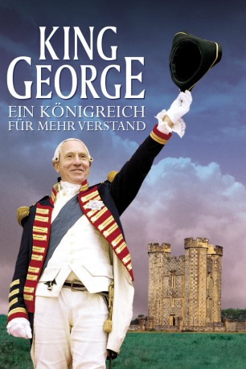
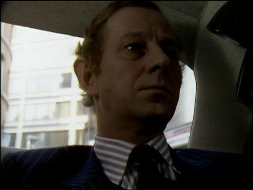

#12031 King George - Ein Königreich für mehr Verstand
Alternativ: The Madness of King George (Englischer Titel)
Auszeichnungen: 1 Oscars gewonnen für 3 Oscars nominiert 1 BAFTA-Awards gewonnen
 
 IMDB-Wertung: 7.2 / 10
IMDB-Wertung: 7.2 / 10  Tomatometer: 93
Tomatometer: 93  Metascore: 89
Metascore: 89 
König George III ist tüchtig und bei den Untertanen gut angesehen. Eines Tages scheint er allerdings den Verstand zu verlieren und stimmt Ärzte und Parlament ratlos ob seiner Taten. Da wittert schon der Prinz von Wales seine Chance die Macht zu ergreifen...
Jahr: 1994
Dauer: 105 Minuten
FSK: 12
Land: England Studio: Concorde-Castle Rock/TurnerTonspuren: DD2.0 - ,
Untertitel:
Auflösung: 1080p (1920x1040) Größe: 10444 MB
Genre: Drama, Komödie, Geschichte, Biographie
Regisseur: Nicholas Hytner
Drehbuch: Alan Bennett, Alan Bennett
Soundtrack:
Darsteller:
 Rupert Graves als Greville
Rupert Graves als Greville Helen Mirren als Queen Charlotte
Helen Mirren als Queen Charlotte- Amanda Donohoe als Lady Pembroke
 Rupert Everett als Prince of Wales
Rupert Everett als Prince of Wales Julian Rhind-Tutt als Duke of York
Julian Rhind-Tutt als Duke of York Nigel Hawthorne als George III
Nigel Hawthorne als George III Anthony Calf als Fitzroy
Anthony Calf als Fitzroy Adrian Scarborough als Fortnum
Adrian Scarborough als Fortnum John Wood als Thurlow
John Wood als Thurlow-  Jeremy Child als Black Rod
- Nicholas Selby als Speaker
 Julian Wadham als Pitt
Julian Wadham als Pitt Jim Carter als Fox
Jim Carter als Fox- Barry Stanton als Sheridan
 Struan Rodger als Dundas
Struan Rodger als Dundas- Janine Duvitski als Margaret Nicholson
- Caroline Harker als Mrs Fitzherbert
 Roger Hammond als Baker
Roger Hammond als Baker Geoffrey Palmer als Warren
Geoffrey Palmer als Warren- Celestine Randall als Lady Adam
 Cyril Shaps als Pepys
Cyril Shaps als Pepys- Michael Grandage als Amputee
 Ian Holm als Willis
Ian Holm als Willis Clive Brunt als Willis' Attendant
Clive Brunt als Willis' Attendant Selina Cadell als Mrs Cordwell
Selina Cadell als Mrs Cordwell Dermot Keaney als Footman
Dermot Keaney als Footman- Peter Woodthorpe als Clergyman
 Roger Ashton-Griffiths als MP
Roger Ashton-Griffiths als MP- Alan Bennett als 2nd MP
- Ryan Hurst als Asylum Patient (uncredited)
 Guy Standeven als MP (uncredited)
Guy Standeven als MP (uncredited)- Charlotte Curley als Amelia
- Peter Bride-Kirk als Royal Children
- Eve Camden als Royal Child
- Thomas Copeland als Royal Child
- Joanna Hall als Royal Child
- Cassandra Halliburton als Royal Child
- Russell Martin als Royal Child
- Natalie Palys als Royal Child
- David Leon als Footman
- Martin Julier als Footman
- Matthew Lloyd Davies als Papandiek
- Paul Corrigan als Braun
- Dan Hammond als Footman
- Nicholas Irons als Footman
- Nick Sampson als Sergeant at Arms
- Iain Mitchell als Farmer
- James Peck als Willis' Attendant
- Fergus Webster als Willis' Attendant
- Barry Gillespie als Willis' Attendants
Datei: X:\1994\King George - Ein Königreich für mehr Verstand (1994, FSK12, 1920x1040).mkv seit 11.11.2019
Festplatte: Gemischt-01+Anime
 Es gibt insgesamt 67 Filme in der Gruppe '1994'
Es gibt insgesamt 67 Filme in der Gruppe '1994'